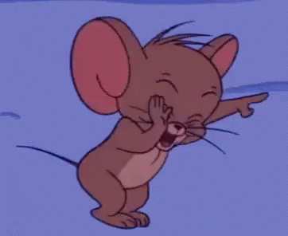

Lola gathered up her courage
and towards the suspicious figure as she shouted obscenities at it, demanding that the figure reveal it’s identity. A burst of quaking laughter
quickly disrupted Lola’s frantic train of thought. She recognized the goofy snort that escaped the figure’s mouth, she knew one person and one person only who laughed so ridiculously. “Edward!!!! Is that you following me?!” she asked as he kneeled
on the ground trying to gather his breath after his fit of excitement. “Yes Lola it is I, Ed The Great!” Edward replied as he struck a silly pose. He explained that he followed behind her because he did not feel right letting her go off alone at such a late hour. Impressed by his reasoning, Lola put an arm around him
as they continued the walk together.
Return To The Beginning | Previous Page